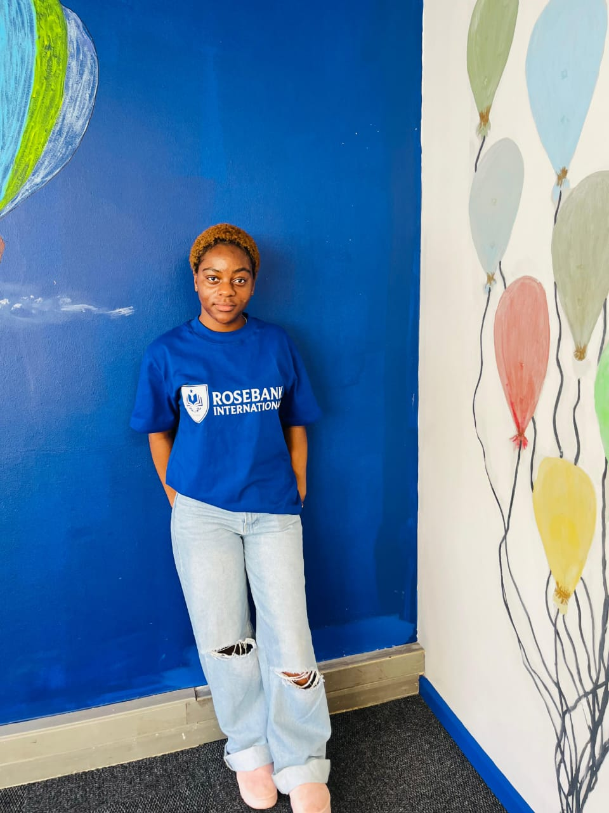
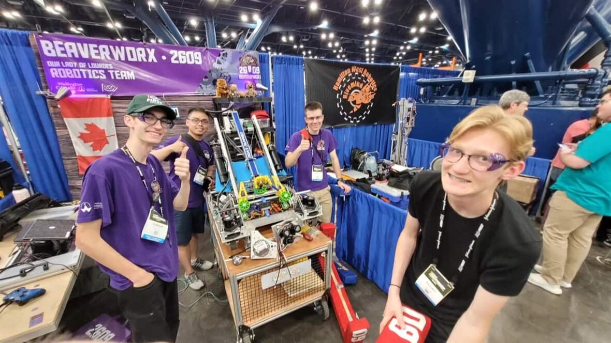

Founding Director
Oversees partnerships with conservation organisations and field project rollout.
RoboWild is a non-profit organisation that uses information technology and robotics to support wildlife conservation. It brings together IT professionals, engineers, conservationists and volunteers to develop practical technology that helps monitor and protect wildlife. The organisation aims to encourage collaboration between the technology sector and conservation organisations while promoting sustainable solutions for protecting endangered animals.
To advance animal welfare and conservation by making robotics, AI and IT innovation accessible to the organisations that protect wildlife.
A world in which every conservation and animal-welfare organisation has the technology and technical skills needed to protect the species in its care.
To advance animal welfare and conservation by making robotics, AI and IT innovation accessible to the organisations that protect wildlife.
A world in which every conservation and animal-welfare organisation has the technology and technical skills needed to protect the species in its care.
Collaboration between technologists and conservationists, practical low-cost solutions, and sustainable skills transfer to local teams.
Professionals and students who want to put their skills toward conservation.
Organisations needing technical support, equipment or training.
Individuals and businesses funding equipment, workshops and field projects.

Oversees partnerships with conservation organisations and field project rollout.

Designs and adapts low-cost monitoring and tracking equipment for the field.

Matches skilled volunteers with active projects and runs training workshops.